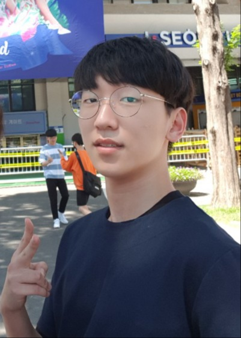

I'm on my 9th semester as undergraduate at KAIST, School of Computing.
I'm planning to join the graduate school of computing at KAIST.
Contact
- Email : vamoshcahn_at_kaist.ac.kr
- Github : AnHaechan
Interests
I have interests in theories of programming languages and program analysis. Also I care about writing clean and neat code, in general, designing such abstractons. My belief is that we can make difficult, almost impossible-to-handle things easier with careful design based on rigorous reasoning. Recently, interests on systems programming, hardware-aware design is growing on me.
Experiences
- 2020 Summer, Research Internship, at KAIST NLP-CL Lab : studied NLP with Deep Learning(Stanford CS224n) & read papers about Neuro-Symbolic AI
- 2020 Winter & 2021 Summer, Research Internship, at KAIST PLRG : worked on instrumentation to JNI program for dynamic dataflow tracking, to detect unspecified usages of JNI APIs : worked on finding patterns for shared mutable state in TockOS, an operating system in Rust : studied the book Types and Programming Languages
- 2021 Winter, Startup, at 밥약 : Software Engineer, Data PipeLine and Web Frontend : participated in Ideation process
- 2022 Spring, Research Internship, at KAIST Prosys Lab : worked on using Infer Pulse for catching type confusion errors
- 2022 Summer ~, Research Internship, at KAIST Concurrency and Parallelism Lab : working on designing an efficient library for persistent memory
Skills
| Lanauges |
| Python, Ocaml, Rust, C |
| DevOps |
| Linux, Git, Docker |
Publications
Hope I contribute expanding the knowledge of humankind soon.
Memorable Courseworks
(* Due to the course policies, my implementation repos are all private.)- Implemented KECC, an end-to-end C-to-RISC-V compiler, in Rust, in CS420 lecture
- Implemented static analyzers for C program, based on the abstract interpretation framework, in Ocaml LLVM Bindings, in CS524 lecture
- Studied denotational semantics of imperative & functional languages, with the book Theories of Programming Language by John C. Reynolds, in CS520 lecture
- Implemented PintOS-KAIST, an educational operating system, in CS330 lecture
- Experienced a research process-paper review, project proposal & lighting talk, review & rebuttal, final presentation-, on the topic of program synthesis & verification, in IS593 lecture
- Implemented hardware-aware matrix multiplication algorithm in CUDA, in EE595 lecture
Courses I've taken so far
- CS220, Principles of Programming
- CS300, Introduction to Algorithms
- CS320, Programming Languages
- CS402, Logic for Computer Science
- CS420, Compiler Design
- CS431, Concurrent Programming
- CS453, Automated Software Testing
- CS520, Theory of Programming Languages
- CS524, Program Anaylsis
- IS593, Program Synthesis & Program Verification
- Book, Types and Programming Languages
- CS230, Systems Programming
- CS311, Computer Organization
- CS330, Operating Systems
- CS343, Computer Network
- EE595, Parallel Computer Architecture
- MAS250, Probability & Statistics
- MAS350, Elementary Probability Theory
- CS372, Natural Language Processing with Python
- CS376, Machine Learning
- CS470, Introduction to Artificial Intelligence
- EE534, Pattern Recognition
- MIT 6.S191m, Introduction to Deep Learning
- Stanford CS224n, NLP with Deep Learning
- CS374, Human Computer Interaction
- CS448, Introduction to Information Security
- Programming Languages & Program Analysis
- Systems & Networks
- Machine Learning & AI
- Others